3. 임베디드 프로세서 종류 (원본 p.294)
▸ 원본 p.294 표: BAM
| 구분 | 내용 | 예 |
|---|---|---|
| 임베디드 프로세서 아키텍처 | • 프로세스 아키텍처는 프로세서의 기본구조 • 명령어의 구성이나 레지스터의 구성 등 프로세서의 핵심적인 특정 결정 | • ARM • MIPS • PowerPC |
| 임베디드 프로세서 SoC | • SoC는 프로세서 코어에 UART나 타이머, 메모리, LCD 제어기 등 필요한 주변기기를 칩에 내장시켜 하나의 칩으로 만드는 기술 | • PAX255(인텔) • S3C2440(삼성) • Au1200(AMD) • MPC860(모토로라) |
| 구분 | 내용 |
|---|---|
| 스케줄러(scheduler) | • RTOS의 핵심으로 실시간성을 위해 태스크 관리에 따라 성능 좌우 |
| 인터럽트 처리 (interrupt processing) | • 프로세서 외부의 장치가 프로세서 사용을 요청하는 신호 |
| 자원관리 (Resource Management) | • 리소스가 제한된 임베디드 시스템에서 자원 활용 방법 |
| 태스크(Task) | • 스케줄러가 프로그램들을 실행시키기 위한 일의 작은 단위 • 태스크들의 관리, 우선순위 정책, 스케줄링 알고리즘 선정 |
1. 메모리(memory)의 정의 (원본 p.295-296)
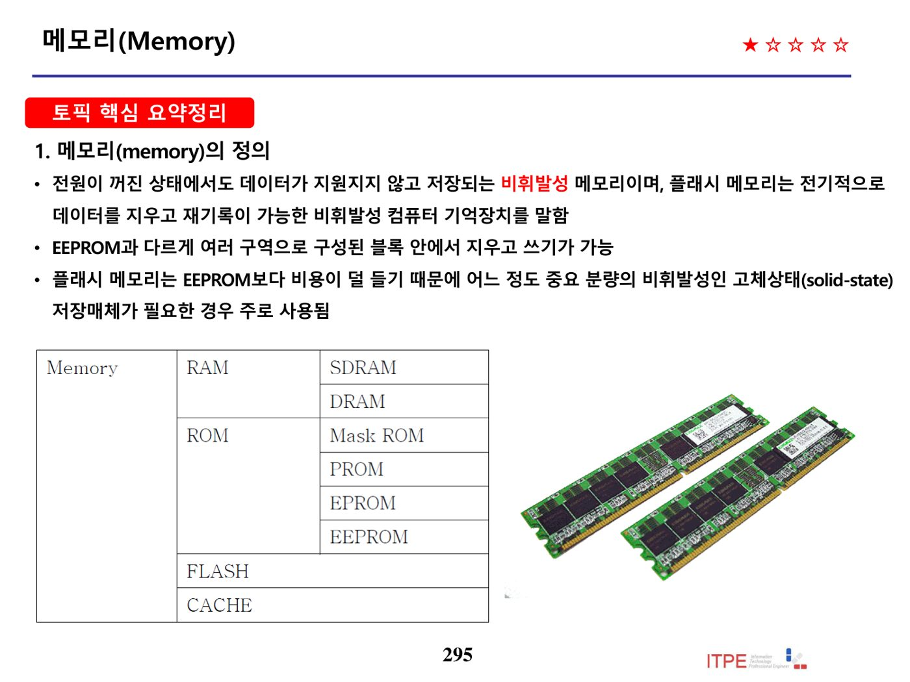
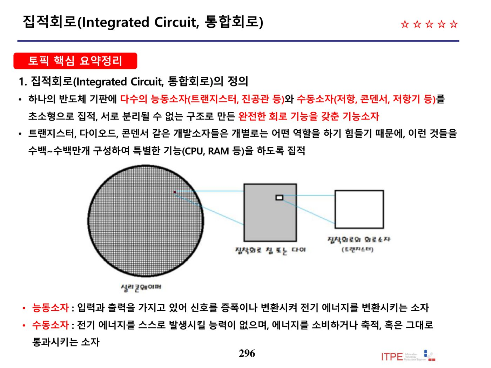
2. 집적도에 따른 분류 (원본 p.297)
▸ 원본 p.297 표: 집적도에 따른 분류
| 정식명칭 | 약칭 | 칩 1개에 집적된 기능 소자 수 | 사용 |
|---|---|---|---|
| 저밀도 집적회로 (Small Scale Integration) | SSI | 100만개 미만 | 메인프레임 컴퓨터 등 |
| 중밀도 집적회로 (Medium Scale Integration) | MSI | 100~1000개 | 인코더, 디코더, 카운터, 레지스터, 멀티플렉서, 디멀티플렉서, 소형기억장치 등 |
| 고밀도 집적회로 (Large Scale Integration) | LSI | 1000~10만개 | 컴퓨터의 메인 메모리나 계산기의 부품 등 |
| 초고밀도 집적회로 (Very Large Scale Integration) | VLSI | 10만~100만개 | 대규모 메모리, 마이크로 프로세서, 단일 칩 마이크로 프로세서 등 |
| 울트라 고밀도 집적회로 (Ultra Large Scale Integration) | UVLSI | 100만개 이상 | 인텔486, 펜티엄 등 |
| 시스템 온 칩 (System on a Chip) | SoC | 여러 개의 집적회로 통합 | 임베디드 시스템 분야 등 |
3. 집적회로의 발전 (원본 p.298)
▸ 원본 p.298 표: 집적회로의 발전
| 3세대(1970년대 초반) | 4세대(1970년도 중반) | 5세대(1980년대 이후) | |
|---|---|---|---|
| 주요소자 | 초기 저밀도 집적회로(SSI) | 고밀도 집적회로(LSI) | 초고밀도 집적회로(VLSI) |
| 주요기억장치 | 집적회로(IC), RAM과 ROM 사용 | 고밀도 집적회로(LSI) | 초고밀도 집적회로(VLSI) |
| 보조기억장치 | 자기디스크, 자기테이프 | 자기디스크, 자기테이프 | 자기디스크, 광디스크 |
| 처리속도 | ns(10~9) | ps(10~12) | fs(10~15) |
| 사용언어 | 고급언어 | 고급언어 | 객체지향언어 |
| 특징 | 시분할시스템 사용 OMR, OCR, MICR 도입 MIS 도입 | 마이크로 프로세서 개발로 가정용 PC의 등장, 네트워크 발달 | 인터넷의 확산, 퍼지(Fuzzy), 인공지능(AI), 음성인식, 패턴인식 등의 신기술 |
1. 운영체제(Operating System)의 정의 (원본 p.299)
▸ 원본 p.299 표: 운영체제(Operating System)
| 구분 | 내용 |
|---|---|
| 일괄처리 (batch processing) | • 작업 요청을 일정량 모아서 한꺼번에 처리, 초기 운영 체제의 형태, 비효율적(작업이 완전 종료될 때까지 기다리는 시간이 많음) |
| 시분할 (time sharing) | • 한 컴퓨터 시스템이 여러 작업을 수행할 때 컴퓨터 처리 능력을 시간별로 분할 • 일괄 처리 시스템에 비해 짧은 응답 시간을 가짐, 대화식(interactive) 예) UNIX |
| 실시간 (real time) | • 정해진 시간 안에 어떠한 일이 반드시 종료되어야 하는 시스템 • 매우 빠른 입력, 처리속도를 가짐, RTOS(Real Time OS)라고 부름, 특수 목적의 전용 프로그램을 항상 메모리에 적재하여 반복 수행 • 예) 증권거래 관리시스템, 은행 입출금 시스템, 미사일 제어, 우주선 비행시스템 |
3. 운영체제의 구성 (원본 p.300)
▸ 원본 p.300 표: BAM
| 구분 | 내용 |
|---|---|
| 커널(kernel) | • 좁은 의미의 운영체제 • OS의 핵심으로 부팅할 때 주기억장치에 로드되어 상주, 운영체제 중 자주 사용되는 부분을 커널로 구성, CPU 스케줄링, 인터럽트 처리 루틴, 시스템 자원을 관리하고 입출력 기능 수행 |
| 서비스 | • 필요할 때 보조 기억장치에서 주기억 장치로 로드되어 수행 편리성 제공 |
5. 운영체제 기능 (원본 p.301-302)
▸ 원본 p.301 표: BAM
| 구분 | 내용 |
|---|---|
| 자원할당 | • CPU 사용시간, 메모리 공간, 파일 저장공간 자원관리 |
| 제어 프로그램 | • 입출력 장치의 제어, 사용자 프로그램의 제어 |
| 사용자 편의 제공 | • 컴퓨터에 대한 깊은 지식 없이 컴퓨터 사용 가능하게 함 |
| 프로세스 관리 | • 한 시스템 내의 기본 작업단위인 프로세스(Process)들을 효율적으로 관리 |
| 파일 관리 | • 시스템 내의 디렉토리 및 파일의 생성/제거 |
| 입출력 시스템 관리 | • 입출력 장치 별로 제공되는 디바이스 드라이버를 통해 다양한 입출력 시스템 관리 |
| 보조 메모리 관리 | • 디스크/테이프 등 2차 저장장치의 스케줄링 및 공간할당 관리 |
| 네트워킹 | • 네트워크 접근을 파일 접근으로 일반화하여 다양한 시스템 간 통신관리 |
| 자원보호 | • 정의한 시스템 자원에 대해 프로세스 또는 사용자 접근 제어 |
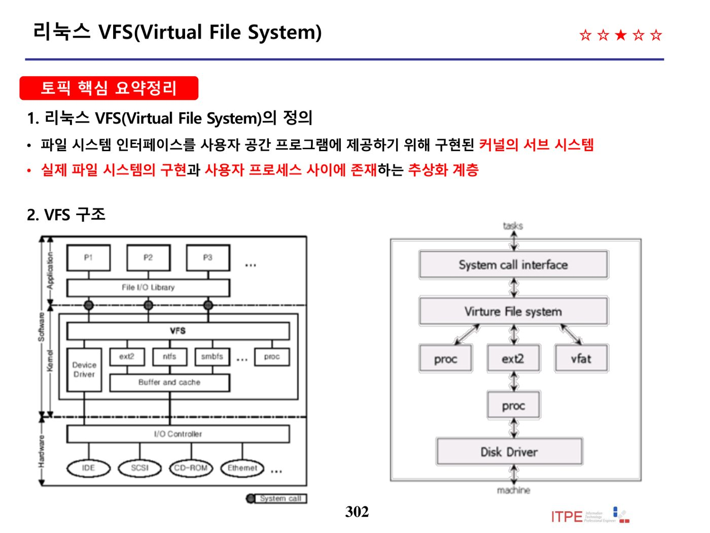
3. VFS 주요 객체 (원본 p.303-307)
▸ 원본 p.303 표: BAM
| 구분 | 내용 |
|---|---|
| 슈퍼 블록 객체 | • 마운트 된 파일 시스템에 대한 정보를 저장. 전체 파일 시스템을 나타냄 |
| 아이노드 객체 | • 특정 파일에 대한 일반 정보를 저장. 디스크에 저장한 파일 제어 블록에 대응 |
| 파일 객체 | • 열린 파일과 프로세스 사이의 상호 작용과 관련한 정보를 저장, 각 프로세스가 열린 파일을 가지는 동안 커널 메모리에만 존재 |
| 디엔트리 객체 | • 디렉토리 항목(특정 파일 이름과 아이노드)과 이에 대응하는 파일의 연결에 대한 정보 저장 |
| 구분 | 내용 |
|---|---|
| 슈퍼 블록 객체 | • 마운트 된 파일 시스템에 대한 정보를 저장. 전체 파일 시스템을 나타냄 |
| 아이노드 객체 | • 특정 파일에 대한 일반 정보를 저장. 디스크에 저장한 파일 제어 블록에 대응 |
| 파일 객체 | • 열린 파일과 프로세스 사이의 상호 작용과 관련한 정보를 저장, • 각 프로세스가 열린 파일을 가지는 동안 커널 메모리에만 존재 |
| 디엔트리 객체 | • 디렉토리 항목(특정 파일 이름과 아이노드)과 이에 대응하는 파일의 연결에 대한 정보 저장 |
▸ 원본 p.306 표: 실시간 시스템(Real Time System)
| 구분 | 내용 |
|---|---|
| 경성(hard) 실시간 시스템 | • 시스템이 주어진 마감시간을 만족시키지 못한 경우에 막대한 재산적 손실이나 인명의 피해를 주는 경우에 적용되는 시스템 |
| 연성(soft) 실시간 시스템 | • 온라인 트랜잭션 시스템과 같이 시간제약 조건을 만족시키지 못하더라도 경성의 경우처럼 치명적이지 않고 마감시간을 넘겨 수행을 마쳐도 계산의 결과가 의미가 있는 경우에 적용되는 시스템 |
| 준경성(firm) 실시간 시스템 | • 경성과 연성의 중간 형태로 마감시간을 넘겨 수행을 마치는 것은 무의미한 경우로 시간 초과에 대한 손실이 치명적이지 않은 경우에 적용되는 시스템 |
▸ 원본 p.307: 우선순위 역전(Priority Inversion)
1. 우선순위 역전(Priority Inversion)의 정의
- 우선 순위가 높은 태스크(Task)가 Ready 상태(실행가능 상태)로 바뀌었지만, 더 낮은 우선순위의 태스크가 CPU를 점유하고 있어서 실행되지 못하는 상태
- 높은 우선순위의 프로세스가 낮은 우선순위의 프로세스로 인하여 수행이 블록(block)되어 있는 상태
2. 우선순위 역전의 원인 • 스케줄링 규칙에서 실행되어야 하는 쓰레드와 동기화에서 실행되어야 하는 쓰레드가 서로 다른 경우, 결과적으로 두 쓰레드의 우선순위가 역전되어 나타남
1) 비선점 스케줄링에서 낮은 우선순위의 태스크가 자원을 점유
2) 실시간 운영체제에서의 상호배제를 위한 세마포어를 이용
3) 공유자원의 장기 소유
4) 자원 점유 후 릴리즈시 낮은 우선순위의 태스크가 자원을 점유하는 경우
3. 우선순위 역전 흐름 (원본 p.308-310)
▸ 원본 p.308 표: BAM
| 구분 | 내용 |
|---|---|
| 우선순위 상속 (Priority Inheritance) | • 높은 우선 순위의 프로세스를 블록 시키고 있는 프로세스가 세마포어를 소유하고 실행 중일 때 우선 순위 낮은 프로세스를 세마포어 요청한 우선순위 높은 프로세스만큼 우선 순위를 일시적으로 높여주는 것 |
| 우선순위 올림 (Priority Ceiling) | • 어떤 쓰레드가 뮤텍스를 소유하고 있는 동안은 지정된 우선순위에서 동작 |
| 구분 | 내용 |
|---|---|
| 우선순위 상속 | • Priority Inheritance • 높은 우선 순위의 프로세스를 블록 시키고 있는 프로세스가 세마포어를 소유하고 실행 중일 때 우선 순위 낮은 프로세스를 세마포어 요청한 우선 순위 높은 프로세스만큼 우선 순위를 일시적으로 높여주는 것 |
| 우선순위 올림 | • Priority Ceiling • 어떤 쓰레드가 뮤텍스를 소유하고 있는 동안은 지정된 우선순위에서 동작 |
1. 컴파일러(Compiler)의 정의 (원본 p.311-312)
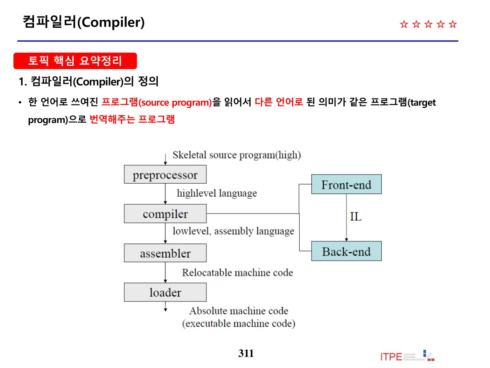
▸ 원본 p.312 표: BAM
| 구분 | 내용 |
|---|---|
| Lexical analysis(어휘분석) | • Source program을 읽어서 문법의 최소단위인 token(토큰)을 생성하며, 토큰(token)은 키워드, 연산자, 식별자, 상수를 의미함 |
| Syntax analysis(구문분석) | • Token을 읽어 오류를 검색하고 올바른 문장에 대한 구문구조를 만듬 |
| Semantic analysis(의미분석) | • Type checking(타입검사)가 수행되며 각 연산자가 원시 언어의 정의에 맞는 피연산자를 가지는가를 검사함 |
| Intermediate code generation(중간코드생성) | • 구문구조를 이용하여 코드생성 또는 문법규칙에 의해 생성 |
| Code optimization(코드최적화) | • 선택적 단계(공간적, 시간적 효율화를 위해 필수적) |
| Code generation(코드생성) | • 목적 코드생성, assemble language, machine code |
1. 프로세스(Process)의 정의 (원본 p.313-316)
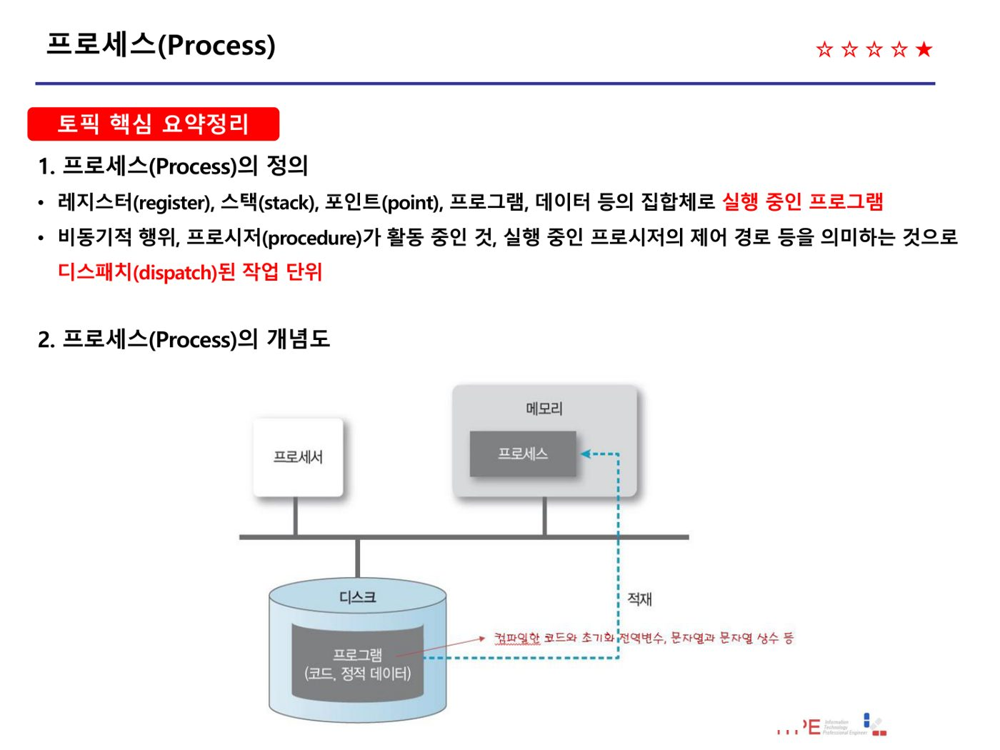
▸ 원본 p.314 표: BAM
| 상태 | 내용 |
|---|---|
| New | • 프로세스가 생성 중 |
| Running | • 프로세스가 CPU를 차지하고 실행 중인 상태 |
| Ready | • 프로세스가 실행을 준비하고 있는 상태(프로세스가 프로세서에 할당 대기) |
| Blocked | • 프로세스가 어떤 사건(입출력 완료 또는 신호의 수신 같은)이 일어나기를 기다림 |
| Terminated | • 프로세스 실행이 종료됨 |
▸ 원본 p.315 표: BAM
| 기법 | 알고리즘 | 내용 |
|---|---|---|
| 비선점 | FCFS (First Come First Service) | • 선입선출 알고리즘 • 프로세스가 준비완료 큐에 진입하면, 이 프로세스의 PCB를 큐의 맨 끝에 연결 |
| SJF (Shortest Job First) | • 최단 작업 우선 알고리즘 • 준비완료 큐의 프로세스들 중 작업시간이 가장 짧은 순서대로 CPU에 할당(starvation 발생 가능) | |
| HRN (Highest Response Ratio Next) | • 대기 중인 프로세스 중 현재 Response Ratio가 가장 높은 프로세스를 CPU에 할당 • Response Ratio = (대기시간 + 서비스시간) / 서비스시간 • 짧은 작업시간이나 대기시간이 긴 작업은 우선 순위가 높아짐 | |
| 우선순위 (Priority Scheduling) | • 각 프로세스에게 주어진 우선순위에 따라 CPU 할당 • 우선순위가 낮은 프로세스는 Starvation 발생(Aging 기법으로 해결) |
▸ 원본 p.316 표: BAM
| 기법 | 알고리즘 | 내용 |
|---|---|---|
| 선점 | Round Robin | • 대화식 시분할 시스템을 위해 설계 • Ready queue에서 FCFS방식으로 디스패치(dispatch)되며, 각 프로세스에 대한 CPU 사용시간은 time slice 또는 time quantum이라는 작은 시간 단위로 운영됨 |
| SRT (Short Remaining Time) | • 준비큐에서 가장 짧은 시간이 소요되는 프로세스를 먼저 CPU에 할당 | |
| 다단계 큐 (Multi Level Queue) | • 작업을 여러 개의 그룹으로 나누어 프로세스의 종류별로 이용 | |
| 다단계 피드백 큐 (Multi Level Feedback Queue) | • 여러 개의 대기큐를 두고 각 큐마다 우선순위와 할당시간을 달리하는 방식 • 최상위 큐는 우선순위 높고 할당시간 적음 • 프로세스가 처음 대기큐에서 CPU에 할당되어 할당시간만큼 CPU 이용, 할당 시간내에 작업이 끝나지 않으면 다음 레벨의 큐에서 대기 • 가장 낮은 대기큐는 FCFS 방식으로 처리 |
1. 교착상태(Dead Lock)의 정의 (원본 p.317)
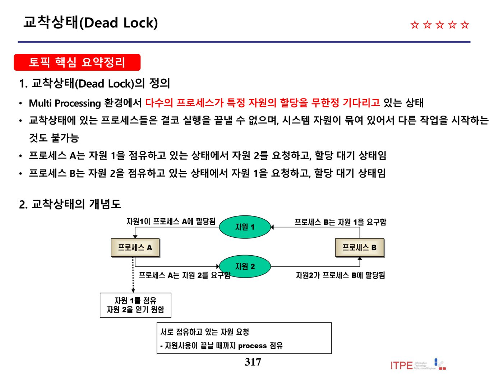
3. 교착상태 발생원인 (원본 p.318)
▸ 원본 p.318 표: BAM
| 원인 | 내용 |
|---|---|
| 상호배제 (Mutual Exclusion) | • 프로세스들이 자원을 배타적으로 점유하여 다른 프로세스가 그 자원을 사용하지 못함 |
| 점유와 대기 (Block & Wait) | • 프로세스가 어떤 자원을 할당 받아 점유하고 있으면서 다른 자원을 요구 |
| 비선점 (Non preemption) | • 프로세스에 할당된 자원은 사용이 끝날 때까지 강제로 빼앗을 수 없으며, 점유하고 있는 프로세스 자신만이 해제 가능 |
| 환형대기 (Circular wait) | • 프로세스 간 자원요구가 하나의 원형을 구성 |
| 원인 | 내용 |
|---|---|
| 예방(prevention) | • 상호배제 조건 부정, 점유와 대기 조건 부정, 비선점 조건 부정, 환형대기 조건 부정 |
| 회피(Avoidance) | • 자원할당 그래프를 바탕으로 프로세스가 일정 기간 내에 안정적으로 종료될 수 있다는 확신이 있을 경우에 자원을 할당, 그 외 요구는 만족될 때까지 계속 거절함 |
| 탐지(Detection) | • 시스템의 상태를 감시하는 알고리즘을 통해 교착상태를 검사 |
| 회복(Recovery) | • 교착상태가 없어질 때까지 프로세스를 순차적으로 제거 |
1. 세마포어(Semaphore)의 정의 (원본 p.319)
▸ 원본 p.319 표: 세마포어(Semaphore)
| 구분 | 내용 |
|---|---|
| 이진 세마포어(Binary Semaphore) | • 세마포어 변수가 0과 1의 2개의 값만 가짐 |
| 블럭킹 세마포어 (Blocking Semaphore) | • 세마포어 변수가 0으로 초기화된 이진 세마포어 |
| 계수 세마포어 (Counting Semaphore) | • 세마포어 변수가 0이상 정수값을 가질수 있음 • 생산자와 소비자 문제 해결 • S의 초기 값을 N개로 하면, 최대 N개 프로세스가 통과 가능 |
1. Event Count/Sequencer의 동작 (원본 p.320)
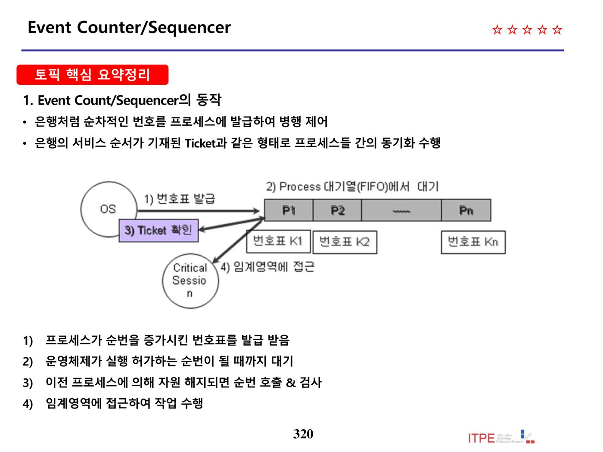
1. 프락시 서버(Proxy Server)의 정의 (원본 p.321)
▸ 원본 p.321 표: 프락시 서버(Proxy Server)
| 구분 | 내용 |
|---|---|
| 방화벽 기능 | • 패킷 필터링, 응용계층 게이트웨이, 스크린 라우터, 베스천 호스트, 이중 네트워크 호스트, 스크린 호스트 게이트웨이, 스크린 서브넷 |
| 캐싱 기능 | • Proxy caching, Transparent caching, Transparent Proxy Caching with Web Cache Redirection |
| 구분 | 내용 |
|---|---|
| Forward Proxy | • 클라이언트 호스트들과 접근하고자 하는 원격 리소스 사이에 서버 위치 • 원격 서버로부터 요청된 리소스를 가져와서 요청한 사용자에게 되돌려 주는 역할 |
| Reverse Proxy | • Proxy Server를 인터넷 리소스 또는 인트라넷 리소스 앞에 위치시키는 방식 • 클라이언트들은 프록시 서버에 연결된 것을 인식하지 못하며, 최종 사용자가 직접 접근하는 효과 제공, 부하조절 기능 제공 |
3. 프락시 서버 동작방식 (원본 p.322)
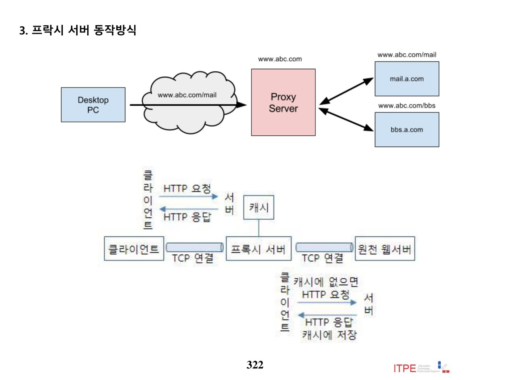
1. 캐쉬 서버(Cache Server)의 정의 (원본 p.323)
▸ 원본 p.323: 캐쉬 서버(Cache Server)
1. 캐쉬 서버(Cache Server)의 정의 • 캐쉬 기능을 인터넷에 응용한 기술로서, 사용자들이 자주 요청할 만한 웹 페이지나, FTP 및 기타 다른 파일들을 저장하고 있다가 쉽게 검색하고 조회할 수 있도록 하는 임시 보관 서버
2. 웹 캐쉬(web cache)
- 인터넷 웹 클라이언트 웹 클라이언트 웹 클라이언트 게이트웨이 가속기 웹 서버
- 서버를 위한 캐시
- 클라이언트 를 위한 캐시
- 하나의 사용자를 위한 브라우저 캐시와는 달리 대다수 사용자를 대상으로 함. 사용자가 많은 만큼 같은 사이트를 방문할 가능성이 높으므로 재 사용될 가능성도 브라우저 캐시에 비해 상당히 높음
- 가장 큰 특징은 특정 웹 페이지를 요청할 경우 두번째 클라이언트 부터는 멀리 있는 서버(origin server)까지 가지 않고 직접 응답한다는 것임
3. 웹 캐시 종류 (원본 p.324)
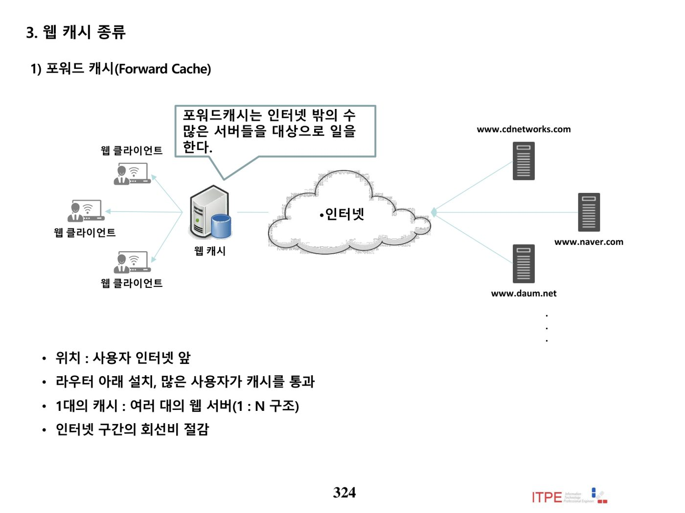
3. 웹 캐시 종류(계속) (원본 p.325-326)
▸ 원본 p.325: BAM
3. 웹 캐시 종류(계속)
2) 러비스 캐시(Reverse Cache) : 웹 가속기(Web Accelerator)라고도 함
- 위치 : 인터넷을 지나 웹 사이트 앞에 설치, 회선 절감이 아닌 서버 부하를 줄여주는 역할
- 다수의 사용자 : 1대의 캐시(N : 1 구조)
- 실제 웹 서버의 IP를 가지고 웹 서버의 성능을 높여준다고 해서 가속기(accelerator)라고도 함
- 캐시가 다운되면 전체 서비스가 다운됨
- 인터넷 웹 클라이언트 웹 클라이언트 웹 클라이언트 웹 캐시 웹 서버
- Reverse cache =
192.168.10.1 W1=192.168.10.2 W1=192.168.10.3 W1=192.168.10.4
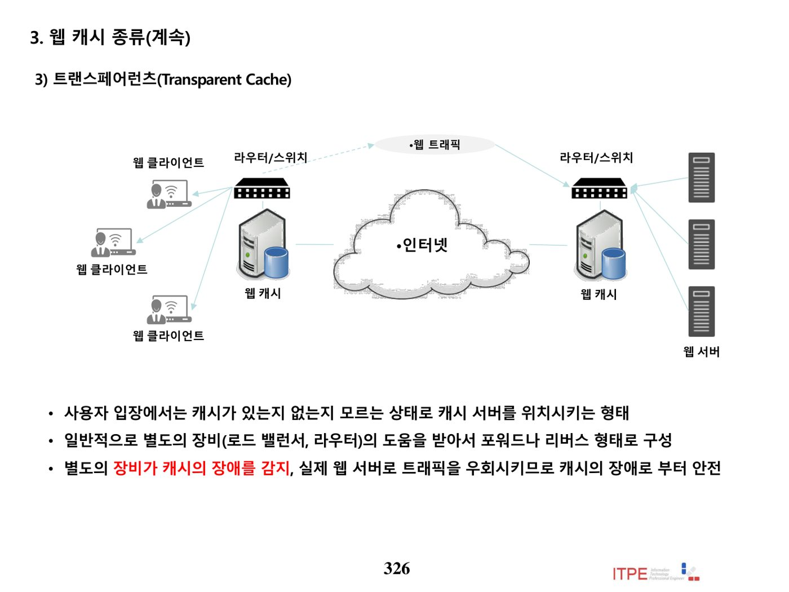
4. 웹 캐쉬 서버 비교 (원본 p.327)
▸ 원본 p.327 표: BAM
| 구분 | Forward Cache | Reverse Cache |
|---|---|---|
| 적용 | • 이용자 그룹 • WAN 구간에 Front-End로 설치 | • 인터넷 서비스 제공 업체 • WAN 구간과 Web Server 사이에 설치 |
| 서비스 방법 | • 내부 이용자들이 원하는 Web 정보를 보관 후 요청이 있는 경우 실제 서버가 아닌 Local에서 정보 제공 | • 변화가 많지 않은 Image 파일이나 Text 파일을 Cache Server에서 제공하여 Web Server의 부하를 줄임 |
| 특징 | • WAN 구간의 트래픽 감소 • Web 이용자에게 보다 빠른 응답처리 • 저장장치 용량이 클수록 유리함 | • 동일 Web Server로 서비스 성능 향상 • Web Server를 확장하는 것보다 유지 관리면에서 유리함 |
1. HA(High Availability)의 정의 (원본 p.329-334)
▸ 원본 p.329: HA(High Availability)
1. HA(High Availability)의 정의
- 고가용성(High Availability)은 서버와 네트워크, 프로그램 등의 정보 시스템이 상당히 오랜 기간 동안 지속적으로 정상 운영이 가능한 성질
- 고가용성은 흔히 가용한 시간의 비율을 99%, 99.9% 등과 같은 퍼센티지로 표현
- 고가용성 솔루션(HACMP, High Availability Clustering Multiprocessing)을 이용하면, 각 시스템 간에 공유 디스크를 중심으로 집단화하여 클러스터로 엮어지게 구성 가능
2. HA 구성방식
| 구분 | 내용 |
|---|---|
| 핫 백업 (hot backup) | • 온라인 백업, 서버의 서비스가 기동 중에 백업을 수행하며, 주 시스템 장애시 데이터 손실 없음 |
| 웜 백업 (warm backup) | • 서버의 서비스 기동 중에 특정 주기적으로 백업 수행 • 백업 서버는 대기 중으로 장애시 선행 백업 이후 데이터 변경사항 손실 가능 |
| 콜드 백업 (cold backup) | • 오프라인 백업. 서비스 기동을 중지하고 백업 수행 • 백업 서버는 평소에 shutdown 상태 |
1. FT(Fault Tolerant)의 정의 (원본 p.335-348)
▸ 원본 p.335 표: FT(Fault Tolerant)
| 구분 | 내용 |
|---|---|
| Fault Detection (결함검출) | • 주로 하드웨어로 구성된 비교기(Compare Logic)을 통하여 이루어지며, 시스템 내에서 Fault가 발생되면 해당 모듈 또는 시스템은 Fault 상태가 됨 |
| Fault Diagnosis (결함진단) | • Fault가 영구적(Hard Fault)이라면, 그 모듈을 시스템 구성에서 제거하며 Fault가 발생하여 자기 진단을 수행한 결과 아무런 문제가 없다고 판단되면, 시스템은 일단 그 Fault를 Transient Fault로 인식하고 모든 동작을 계속 수행 |
| Fault Recovery (결함회복) | • Fault를 유발한 모듈을 시스템에서 제거하여 시스템을 재구성 하면서 이루어지며, Fault Tolerance를 유지할 수 있는 중요한 기능 중 하나는 데이터를 항상 2개 복사하도록 해놓음으로써 Fault Tolerance를 유지 |
▸ 원본 p.336 표: 구분
| 구분 | 내용 |
|---|---|
| 리플리케이션(Replication) | • 동일한 시스템을 복수로 준비하여 병렬로 실행, 다수 결과를 올바른 결과로 적용 |
| 다중화(Redundancy) | • 동일한 시스템을 복수로 준비하여 장애가 일어나면 보조 시스템으로 전환 |
| 다양화(Diversity) | • 같은 사양의 다른 하드웨어 시스템을 복수로 준비/운영, 각 시스템이 동일 장애 미발생 |
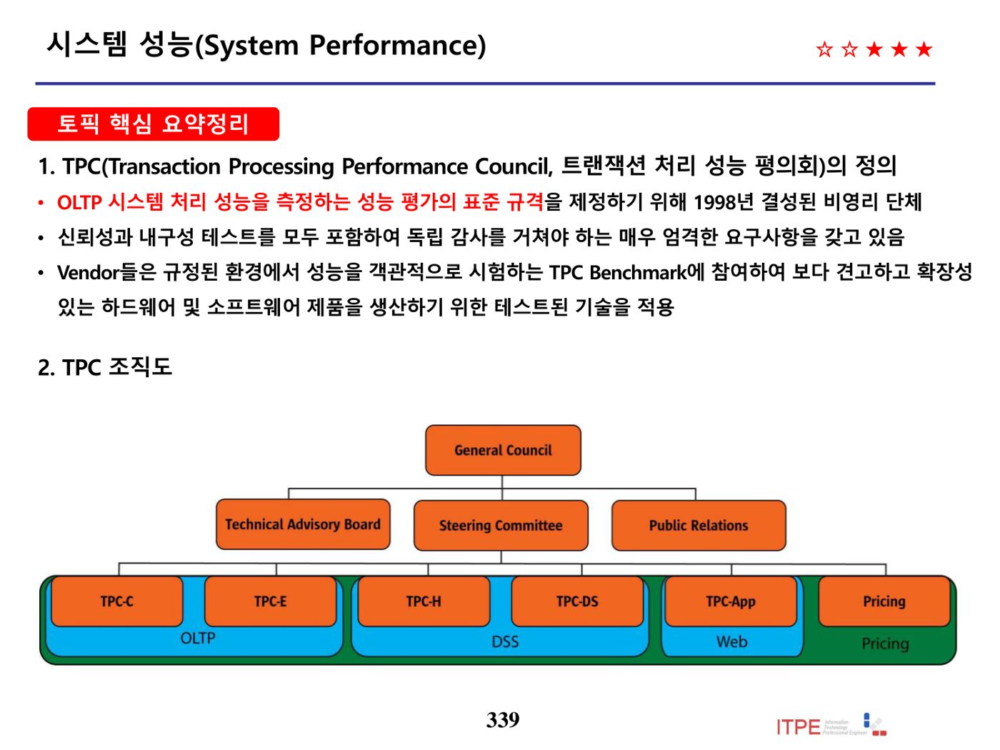
▸ 원본 p.340 표: 구분
| 구분 | 내용 |
|---|---|
| TPC-C | • 온라인 트랜잭션 처리 성능(OLTP) 평가기준으로 DB에 대응하는 트랜잭션을 실행하는 완전한 컴퓨팅 환경을 시뮬레이션 • OLTP 시스템의 성능과 확장성을 측정 • 조회, 수정 등 DBMS의 다양한 기능을 테스트하며 5개의 트랜잭션을 이용하여 성능 측정 (New Order, Payment, Order-Status, Delivery, Stock-level) • 성능측정단위는 분당 처리되는 트랜잭션 량(tmpC : transactions per minute C) |
| TPC-E | • OLTP 환경에서 트랜잭션이 수행되는 동안 시스템에 영향을 미치는 다양한 요인들을 고려하여 정보시스템의 성능을 평가 • OLTP 환경에서 트랜잭션에 영향을 미치는 다양한 요인들을 고려하여 성능평가 • 데이터베이스 테이블은 Market, Customer, Broker, Dimension 등 4개 영역을 포괄하는 Brokerage Firm을 모델로 함 • 성능측정단위는 초당 처리되는 트랜잭션 수 (tps : transactions per second) |
| TPC-H | • 의사결정 지원 성능 평가 기준으로 비즈니스 지향의 특별한 질의와 동시 병행의 데이터 변경으로 구성(TPC-D에서 발전) • 복잡한 ad-hoc 쿼리를 사용하여 대량 데이터 처리를 테스트 |
| TPS-DS | • TPC-H를 대신할 대량의 데이터를 처리하는 서버인 DW의 성능을 측정하기 위한 지표 • TPC-H 보다 향상된 의사지원시스템 성능을 테스트 하며, DSS, OLAP, Data mining이 대상 |
| TPC-App | • 어플리케이션 서버와 웹 서비스 성능 평가 기준으로 어플리케이션 서버의 성능 |
▸ 원본 p.341 표: SPEC(Standard Performance Evaluation Corporation)의 정의
| 구분 | 내용 |
|---|---|
| SPECjms2007 | • JMS(Java Message Service) 기반의 엔터프라이즈 메시지 미들웨어 서버 성능 측정 벤치마크 |
| SPECjEnterprise2010 | • 데이터베이스, CPU, 디스크 및 서버를 비롯한 JAVA EE 5.0 서버와 지원 인프라 전체 시스템 벤치 마크 |
| SPEC OMP2012 | • OpenMP 3.1 표준 기반의 공유 메모리 병렬 처리의 응용 프로그램을 사용한 성능 벤치마킹 |
| SPEC SFS2014 | • 파일서버 등 스토리지 솔루션 벤더의 플랫폼에서 성능을 비교하기 위해 표준화된 처리량, 응답속도 측정 벤치마킹 |
▸ 원본 p.342 표: SPEC(Standard Performance Evaluation Corporation)의 기능별 벤치
| 구분 | 벤치마킹 종류 |
|---|---|
| CPU 벤치마킹 | • SPEC CPU2006, SPEC CPUv6 등 |
| Graphics and Workstation Performance | • SPECviewperf® 12, SPECwpc 등 |
| Handheld | • Handheld 등 |
| High Performance Computing, OpenMP, MPI, OpenACC, OpenCL | • SPEC ACCEL, SPEC MPI2007, SPEC OMP2012 |
| Java Client/Server | • SPECjEnterprise2010, SPECjvm2008 등 |
| Solution File Server(SFS) | • SPEC SFS2014 등 |
| Power | • SPECpower ssj2008, Server Efficiency Rating Tool (SERT) 등 _ |
| SIP | • SPECsip infrastructure2011 등 _ |
| Virtualization | • SPECvirt sc2013 등 _ |
| 구분 | 내용 |
|---|---|
| SPECjms2007 | • JMS(Java Message Service) 기반의 엔터프라이즈 메시지 미들웨어 서버 성능 측정 벤치마크 |
| SPECjEnterprise2010 | • 데이터베이스, CPU, 디스크 및 서버를 비롯한 JAVA EE 5.0 서버와 지원 인프라 전체 시스템 벤치 마크 |
| SPEC OMP2012 | • OpenMP 3.1 표준 기반의 공유 메모리 병렬 처리의 응용 프로그램을 사용한 성능 벤치마킹 |
| SPEC SFS2014 | • 파일서버 등 스토리지 솔루션 벤더의 플랫폼에서 성능을 비교하기 위해 표준화된 처리량, 응답속도 측정 벤치마킹 |
1. 스케일 아웃(Scale out) (원본 p.349-361)
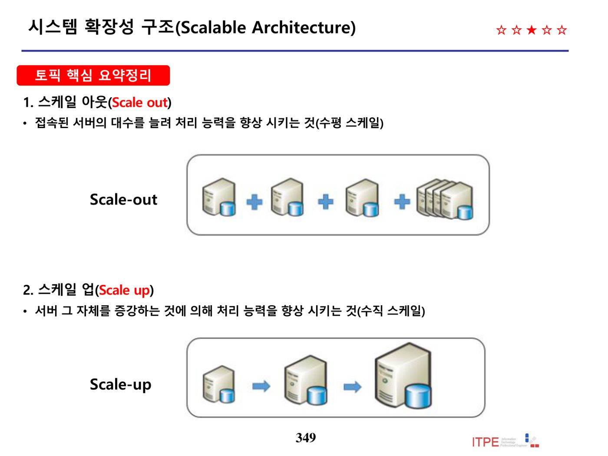
▸ 원본 p.350 표: 스케일 아웃(Scale out)과 스케일 업(Scale up) 비교
| 구분 | 스케일 아웃(Scale out) | 스케일 업(Scale up) |
|---|---|---|
| 확장성 | • 하나의 장비에서 처리하던 일을 여러 장비에 나누어 처리 하도록 설계를 변경하는 것(수평확장) • 지속적 확장 가능 | • 더 빠른 속도의 CPU로 변경하거나, 더 많은 RAM을 추가하는 등으로 하드웨어 장비의 성능을 높이는 것(수직확장) • 성능확장에 한계가 있음 |
| 서버 비용 | • 비교적 저렴한 서버를 사용하므로 일반적으로 비용 부담이 적음 | • 성능 증가에 따른 비용 증가폭이 크며, 일반적으로 비용부담이 큼 |
| 운영 비용 | • 대수가 늘어날수록 관리 편의성이 떨어지며, 서버의 상면 비용을 포함한 운영 비용이 증가함 | • 관리 편의성이나 운영 비용은 스케일 업에 따라 큰 변화 없음 |
| 장애 | • 읽기/쓰기가 여러 대의 서버에 분산되어 처리됨으로 장애시 전면 장애의 가능성이 적음 | • 한대의 서버에 부하가 집중되므로, 장애시 장애 영향도가 큼 |
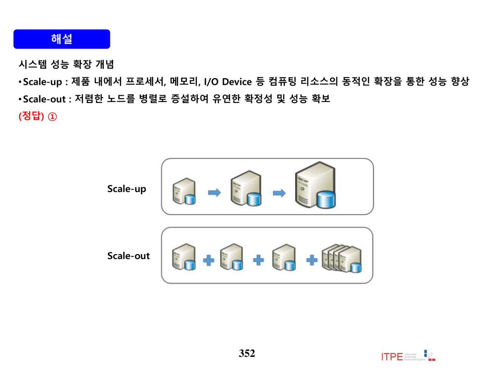
▸ 원본 p.353 표: 용량산정(Capacity Calculation)
| 구분 | 내용 |
|---|---|
| Specweb96(CPU) | • Operations per second • 웹서버 용량산정 = 동시 사용자 X 평균 세션수 X 네트워크 보정 X Perk Time 보정 X 시스템 여유율 X 100/SPECweb96 Class 1,2,3 비율 |
| Specjbb2000(CPU) | • Operations per second • 웹응용서버 용량산정 = 동시 사용자 X 사용자 1인당 평균 비즈니스 로직 오퍼레이션 수(ops) X 네트워크 오버헤드 X 어플리케이션 오버헤드 X 시스템 여유율 |
| TPC-C(CPU) | • Transactions per minute • DB Server 용량산정 = 트랜잭션 처리수 X 최번시간 트래픽 X 트랜잭션 복잡도 X 트랜잭션 증가율 X 네트워크 보정율 X Peak Time 보정율 X 시스템 부하율 X 시스템 여유율 |
| 메모리 | • 메모리 = {시스템 영역(OS, DBMS, M/W 엔진) + 시스템 관리자 영역 + 사용자당 필요 메모리 X 사용자 수} X 버퍼 캐쉬 X 클러스터 보정 X 여유율 |
| 디스크 | • 시스템 디스크 ={시스템 운영체제 + 응용 프로그램 + SWAP 영역 } X 여유율 • 데이터 디스크 = {데이터영역 + 백업영업} X RAID 영역 X 여유율 |
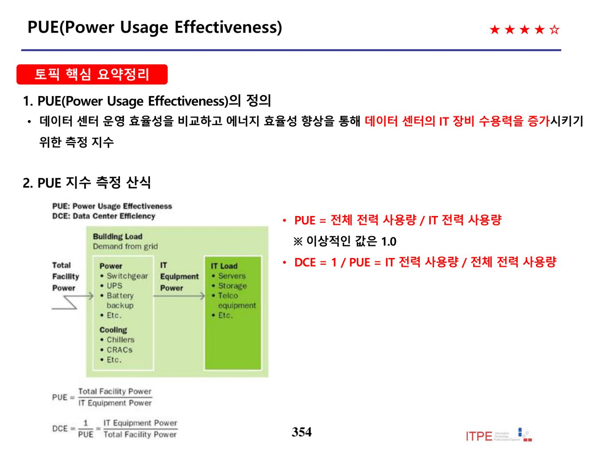
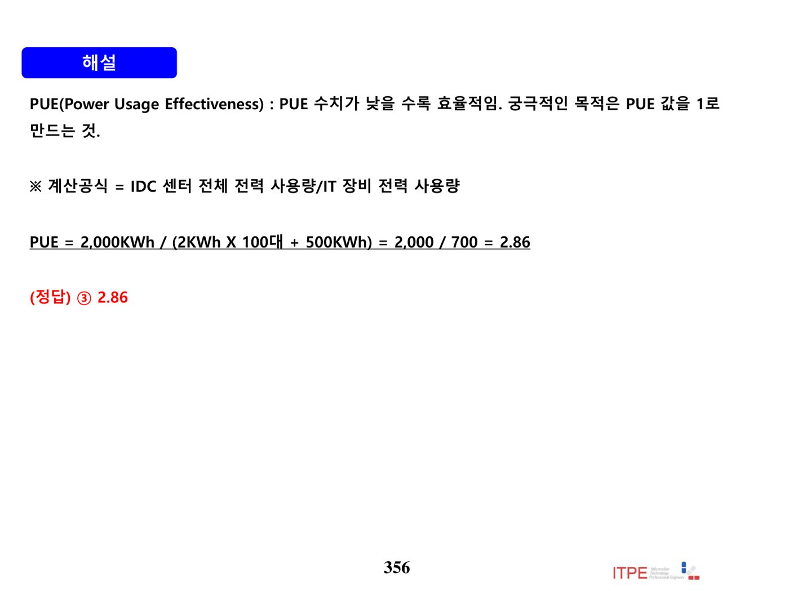
▸ 원본 p.357 표: 가용성(Availability)
| 구분 | 내용 |
|---|---|
| MTBF | • Mean Time Between Failures, 평균 무고장 시간 • 하드웨어 제품이나 구성요소가 고장이 없는 시간 |
| MTTF | • Mean Time To Failures, 고장까지의 평균시간 |
| MTTR | • Mean Time To Repair, 어떤 하드웨어 제품이나 구성요소의 수리시간 평균치 |
| MTBF | • MTTF + MTTR |
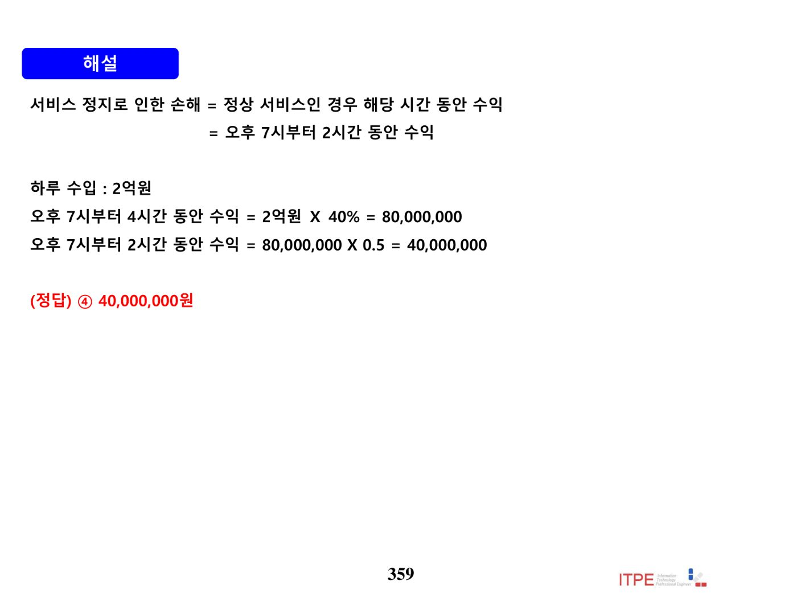
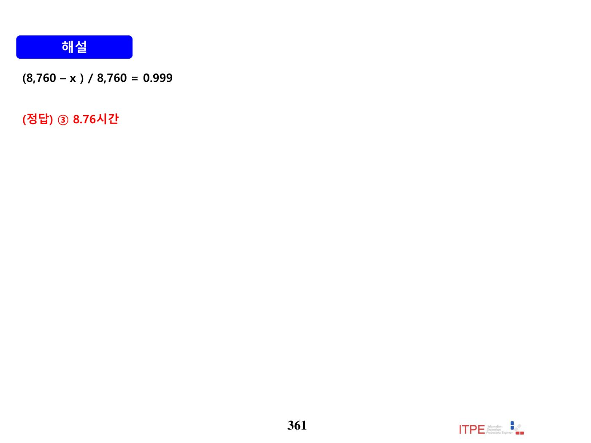
1. 암달의 법칙(Amdahl’s law) 정의 (원본 p.362)
▸ 원본 p.362: 암달의 법칙(Amdahl’s law)
1. 암달의 법칙(Amdahl’s law) 정의
- 병렬처리 프로그램에서 차례로 수행되어야 하는 비교적 적은 수의 명령문들이 프로세서의 수를 추가하더라도 그 프로그램의 실행을 더 빠르게 할 수 없도록 속도향상을 저해하는 요소를 갖고 있다는 법칙
- 컴퓨터 시스템의 일부를 개선할 때 전체적으로 얼마만큼의 최대 성능 향상이 있는지 계산하는데 사용 P : 개선 부분의 비율, S : 성능 향상 배수
2. 암달의 법칙 공식 예시) 어떤 작업의 40%에 해당하는 부분의 속도를 2배로 늘릴 수 있다면, 최대 성능향상은 어느 정도인가? P는 0.4, S는 2배이며, 최대 성능 향상은 1.25배
1. 부하분산(load balancing)의 정의 (원본 p.363)
▸ 원본 p.363 표: 서버 부하분산 방식
| 구분 | 방식 | 내용 |
|---|---|---|
| 정적 | 라운드 로빈(Round Robin) | • 순서대로 할당하는 방식 |
| 가중치(Ratio) | • 가중치가 높은 서버에 할당하는 방식 | |
| 액티브-스탠바이(Priority Group Activation) | • 액티브 장치에게만 할당하는 방식 | |
| 동적 | 최소 연결수(Least Connection) | • 연결 수가 작은 서버에 할당하는 방식 |
| 최단 응답시간(Fatest) | • 가장 빠르게 응답하는 서버에 할당하는 방식 | |
| 최소부하(Least Loaded) | • 가장 부하가 적은 서버에 할당하는 방식 |
3. 정적 부하방식 (원본 p.364)
▸ 원본 p.364 표: 정적 부하방식
| 구분 | 내용 |
|---|---|
| 라운드 로빈 (Round Robin) | • 클라이언트로부터 받은 요청을 부하분산 대상 서버에 순서대로 할당하는 방식 • 부하분산 대상 서버의 성능이 동일하고 처리 시간이 짧은 애플리케이션의 경우 균등하게 분산이 이루어지기 때문에 사용 |
| 가중치 (Raio) | • 서버별로 비율을 설정해 두고, 그 가중치에 따라 요청을 서버에 할당하는 방식 • 부하분산 대상 서버의 성능이 동일하지 않으면, 동일한 처리를 한다고 해도 처리 시간 차이가 발생(성능이 높은 서버를 우선순위 1순위로 지정) |
| 액티브-스탠바이 (Priority Group Activation) | • 서버를 액티브와 스탠바이 상태로 나누어 평상시에는 액티브 장치만 사용 • 액티브 장치에 장애가 발생했을 때 스탠바이 장치로 할당 • 부하분산 보다는 서버 이중화를 위한 기능 |
4. 동적 부하방식 (원본 p.365-370)
▸ 원본 p.365 표: 동적 부하방식
| 구분 | 내용 |
|---|---|
| 최소 연결 수 (Least Connection) | • 연결이 가장 적은 서버에 요청을 할당하는 방식 • 부하분산 장치는 각 서버에 대한 연결정보를 항상 가지고 있으며, 부하분산 장치가 요청을 받는 시점에서 가장 연결 수가 적은 서버를 선택하여 요청 할당 |
| 최단 응답시간 (fastest) | • 가장 빨리 응답하는 서버에 요청을 할당하는 방식 • 부하분산 장치는 클라이언트로부터 전달받은 요청과 서버 응답 사이의 시간을 항상 확인하고 있으며, 부하분산 장치가 요청을 받으면 가장 빠르게 응답하는 서버를 선택해 할당 |
| 최소 부하 (Least Loaded) | • SNMP(Simple Network Management Protocol)에서 취득한 정보를 기준으로 할당할 서버를 결정하는 방식 • 부하분산 장치는 SNMP의 매니저가 되어 CPU 사용율이나 메모리 사용량 등 서버 부하에 관한 정보를 정기적으로 수집 • 부하분산 장치가 요청을 받으면, 취득한 정보를 바탕으로 부하가 가장 적은 서버에 할당 |
| 구분 | 내용 |
|---|---|
| 라운드 로빈 (Round Robin) | • 클라이언트로부터 받은 요청을 부하분산 대상 서버에 순서대로 할당하는 방식 • 부하분산 대상 서버의 성능이 동일하고 처리 시간이 짧은 애플리케이션의 경우 균등하게 분산이 이루어지기 때문에 사용 |
| 가중치(Raio) | • 서버 별로 비율을 설정해 두고, 그 가중치에 따라 요청을 서버에 할당하는 방식 • 부하분산 대상 서버의 성능이 동일하지 않으면, 동일한 처리를 한다고 해도 처리 시간 차이가 발생(성능이 높은 서버를 우선순위 1순위로 지정) |
| 액티브-스탠바이 (Priority Group Activation) | • 서버를 액티브와 스탠바이 상태로 나누어 평상시에는 액티브 장치만 사용 • 액티브 장치에 장애가 발생했을 때 스탠바이 장치로 할당 • 부하분산 보다는 서버 이중화를 위한 기능 |
▸ 원본 p.369 표: DAS/NAS/SAN
| 구분 | 내용 |
|---|---|
| 전통적 접속방법 | • DAS(Direct Attached Storage) |
| 네트워크 접속방법 | • SAN(Storage Area Network), NAS(Network Attached Storage) |
| 구분 | 내용 |
|---|---|
| DAS | • 서버가 채널(SCSI 또는 Fiber Channel)을 통해 대용량 저장장치에 직접 연결하는 방식 |
| NAS | • LAN 또는 WAN과 같은 이더넷 인터페이스(Ethernet Interface)를 통해 연결하는 방식 |
| SAN | • SAN Switch인 광채널 스위치(Fiber Channel Switch)를 이용해 서버에 접속하는 방식 |
▸ 원본 p.370 표: 구분
| 구분 | DAS | NAS | SAN |
|---|---|---|---|
| 구성요소 | 응용시스템 서버, 스토리지 | 응용시스템 서버, 전용 파일 서버, 스토리지 | 응용시스템 서버, 스토리지 |
| 접속장치 | 없음 | LAN 스위치 | FC 스위치 |
| 스토리지 공유 | 가능 | 가능 | 가능 |
| 파일시스템 공유 | 불가능 | 가능 | 불가능 |
| 파일시스템 관리 | 응용시스템 서버 | 파일 서버 | 응용시스템 서버 |
| 비고 | 소규모 독립된 구성에 적합 | 안정성과 신뢰성 높음 | 유연성, 확장성, 편이성 가장 뛰어난 구성 |
2. FCIP(Fibre Channel over IP) (원본 p.371-372)
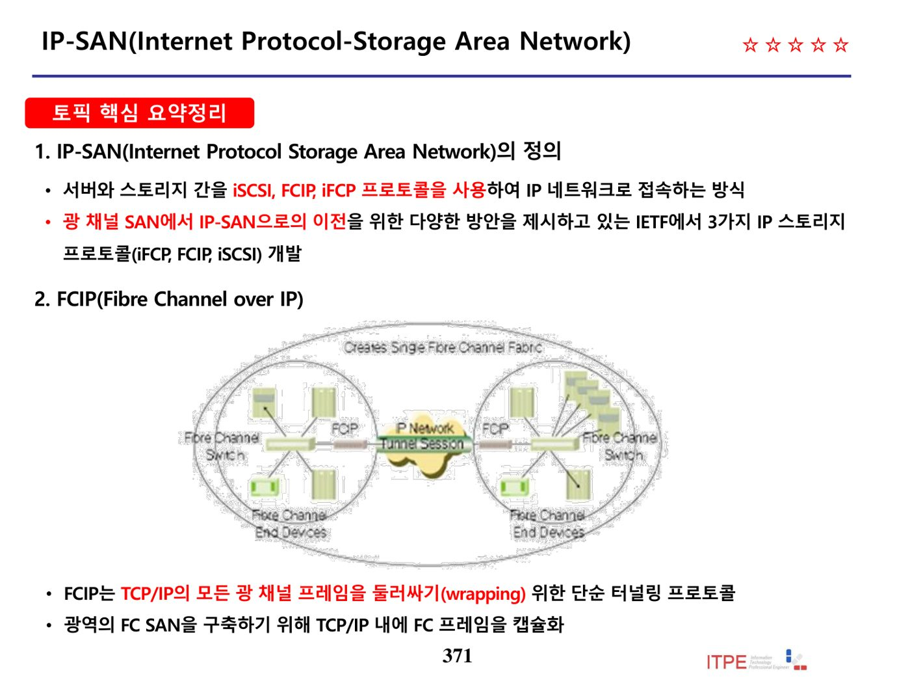
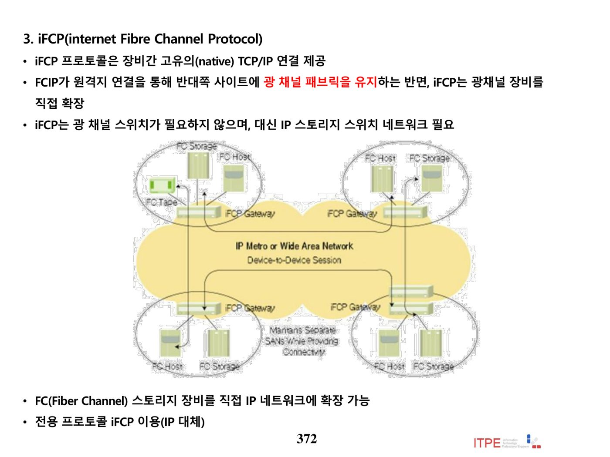
4. iSCSI(internet SCSI) (원본 p.373)
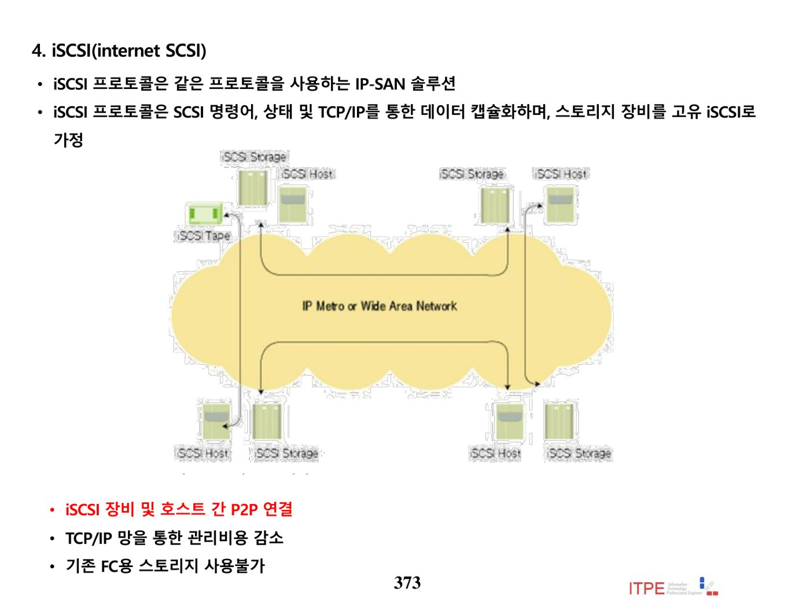
RAID(Redundant Array of Inexpensive Disks) (원본 p.374)
RAID(Redundant Array of Independent Disks)의 정의
▸ 원본 p.374: RAID(Redundant Array of Inexpensive Disks)
1. RAID(Redundant Array of Independent Disks)의 정의
- 한 개의 크고 비싼 드라이브로는 얻을 수 없는 성능이나 안정성을 이루기 위하여 여러 개의 작고, 값싼 드라이브를 묶어 하나의 저장장치처럼 사용하는 기술
- 여러 개의 물리적인 하드 디스크를 운영체제에서 하나의 논리 디스크로 인식
2. RAID의 종류 (1) 하드웨어 RAID
- RAID 기능(볼륨 생성, 패리티 계산, write-back 등)을 하드웨어로 구현한 것
- RAID 기능을 수행하는 응용 프로그램이 하드웨어적으로 구현되어 독자적인 프로세서와 메모리 보유
2. RAID의 종류 (원본 p.375-383)
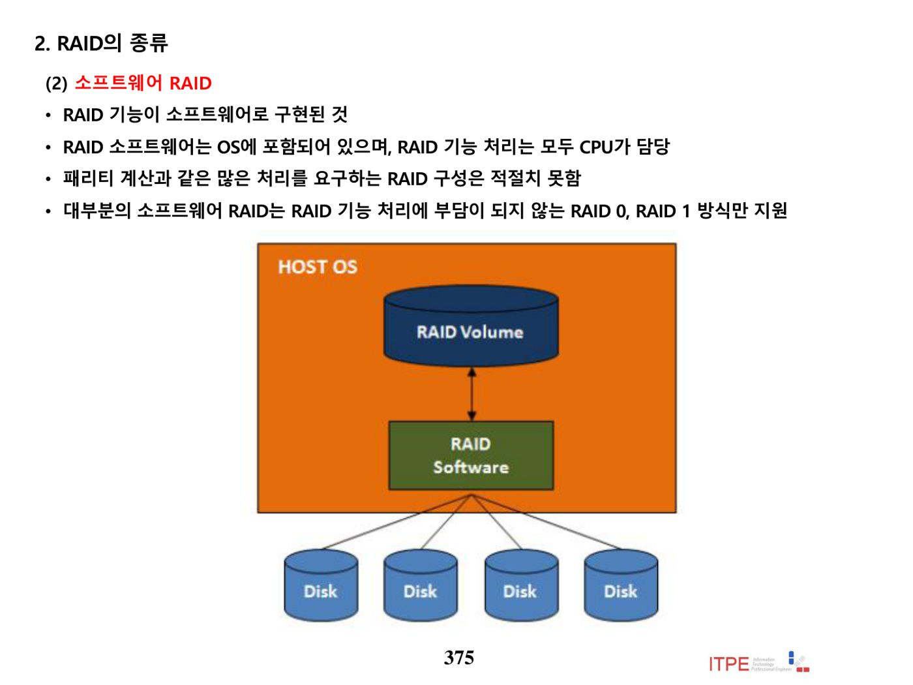
▸ 원본 p.376 표: RAID
| RAID | 구성도 | 내용 |
|---|---|---|
| RAID 0 | • 2개 이상의 디스크를 사용하여 2개 이상의 볼륨을 구성하는 것으로 단순히 볼륨마다 디스크를 나열해 놓았기 때문에 스트라이핑 모드라 불림 | |
| RAID 1 | • 동일한 RAID 볼륨을 추가적으로 구성한 것으로 구성한 볼륨이 서로 동일하기 때문에 미러링 모드로 불림 • 읽기 성능은 다중 스레드를 사용할 경우 분할해서 읽기 때문에 성능향상이 있으나, 쓰기는 중복해서 써야 하므로 성능이 저하됨 | |
| RAID 2 | • 4개의 볼륨을 스트라이핑 모드로 구성하고 추가적으로 3개의 볼륨을 이용해 앞의 4개의 볼륨에 대한 정정코드인 패러티를 저장하게 됨 • 패러티는 일반적으로 해밍코드로 계산함 |
▸ 원본 p.377 표: RAID
| RAID | 구성도 | 내용 |
|---|---|---|
| RAID 3 | • 하나의 볼률만으로 패러티를 저장하므로 디스크의 추가적인 비용이 절약되며, 바이트 레벨의 패러티를 생성하여 각 볼륨의 바이트를 간단히 XOR 연산을 통해 계산 가능 • 패러티 저장을 위해 최소한 3개의 디스크가 필요함 | |
| RAID 4 | • RAID 3와 구성에 차이가 없으나 RAID 4는 패러티를 바이트가 아닌 블록단위로 데이터를 생성 • 성능 향상 장점이 있으며, 패러티 저장에 최소 3개의 디스크가 필요함 | |
| RAID 5 | • 같은 볼륨에 속하는 패러티 디스크로 인한 부하감소를 위해 패러티 디스크들을 각 볼륨에 분할한 방식 • 패러티 디스크는 최소 3개가 필요함 | |
| RAID 6 | • RAID 5에 신뢰성을 더한 방식. RAID 5에서는 2개의 디스크가 동시에 오류가 발생되면 복구가 어렵지만 RAID 6는 패러티의 디스크를 하나 더 추가해 동시에 오류가 발생해도 복구 가능 • 가로, 세로방향 패러티 생성 가능, 추가 패리터 디스크 4개 필요 |
▸ 원본 p.378 표: BAM
| Data | Parity | |||
|---|---|---|---|---|
| Stripe | Redundancy | Type | Redundancy | |
| RAID 0 | ◯ | - | - | - |
| RAID 1 | - | ◯ | - | - |
| RAID 0 + 1 | ◯ | ◯ | - | - |
| RAID 2 | ◯ | - | ECC Hamming | 별도 N disk |
| RAID 3 | ◯ | - | Byte Parity | 별도 1 disk |
| RAID 4 | ◯ | - | Block Parity | 별도 1 disk |
| RAID 5 | ◯ | Parity Chunk | Parity Chunk | - |
| RAID 6 | ◯ | Parity Chunk | Parity Chunk | Second Parity |
| RAID 7 | ◯ | - | Real Time OS with Parity disk | |
| RAID 10 | ◯ | ◯ | - | - |
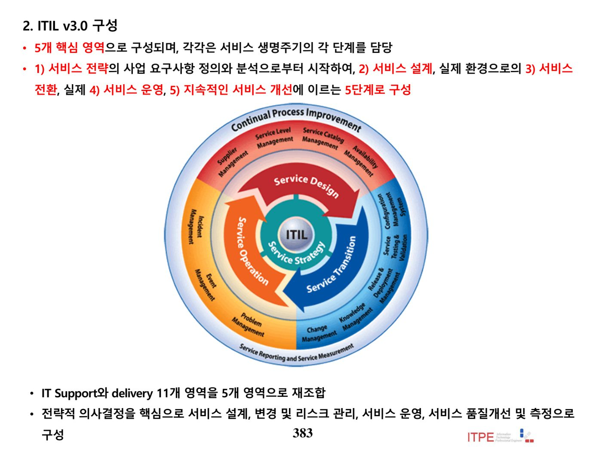
3. 핵심 프로세스 (원본 p.384-387)
▸ 원본 p.384 표: 핵심 프로세스
| 핵심 프로세스 | 주요내용 | 활동 |
|---|---|---|
| 서비스 전략 (Service Strategy) | • IT 서비스 전략 계획 수립 • IT 서비스 조직 및 관계 정의 | 재무관리, 서비스 포트폴리오 관리, 수요관리, 비즈니스 서비스 관리 |
| 서비스 설계 (Service Design) | • 요구사항 분석을 통한 합의/문서화 • 서비스 솔루션 설계 | 서비스 카탈로그 관리, SLM, 용량관리, 가용성 관리, IT 연속성 관리, 정보보안 관리, 공급자 관리 |
| 서비스 전환 (Service Transition) | • 전환계획 수립 및 준비 • 전환, 적용 및 폐기 • 서비스 전환 검토 및 종료 | 변경관리, 서비스 자산 및 형상관리, 지식관리, 전환계획 수립 및 지원, 릴리즈 및 배치관리, 서비스 확인 테스트, 평가 |
| 서비스 운영 (Service Operation) | • 모니터링 및 통제 • 고객 요청 처리 및 의사소통 관리 • 이벤트, 인시던트, 문제 관리 | 이벤트 관리, 인시던트(사건) 관리, 요청 이행 관리, 문제관리, 접근관리, 일상적 서비스 운영활동, 서비스 데스크, 기술적 관리, 애플리케이션 관리, IT 운영관리 |
| 지속적 서비스 개선 (Continual Service Improvement) | • 서비스 리포트 부석 및 트렌드 파악 • 서비스 개선 프로그램 수행 • 전략/설계/이행 단계로의 피드백 | 7단계 개선 프로세스 (1. 측정 대상 정의, 2. 측정 항목 정의, 3. 데이터 수집, 4. 데이터 가공빈도, 포맷, 시스템, 정확도, 5. 데이터 분석관계, 추세, 목표, 교정활동, 6. 평가 요약, 활동 계획 수립, 7. 교정활동 수행) |
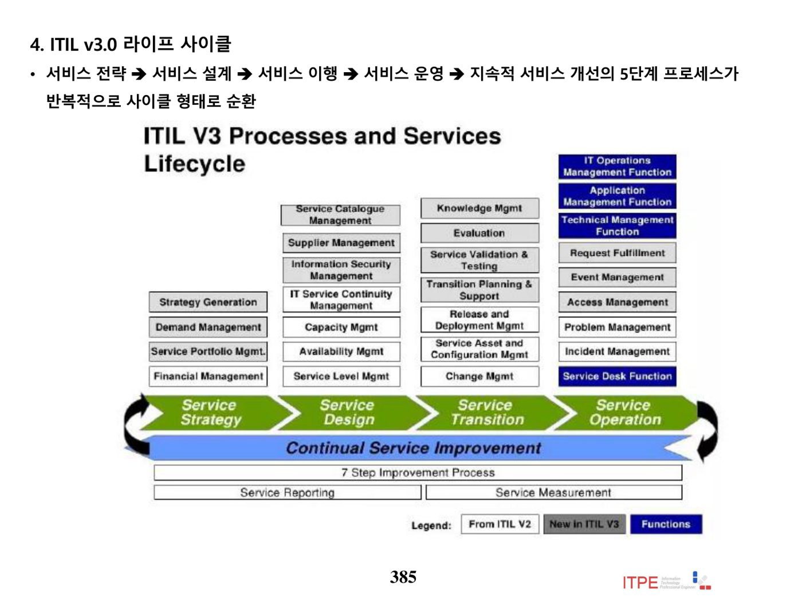
▸ 원본 p.386 표: ITIL V3.0과 ITIL V2.0 비교
| 구분 | ITIL V3.0 | ITIL V2.0 |
|---|---|---|
| 영역 | • 서비스 전략 등 5개 영역 | • Service support 등 7개 영역 |
| 관점 | • 비즈니스 안정의 접근 | • IT 중심관점 |
| 활용범위 | • 대기업에서 중소기업까지 사용 | • 대기업 중심 |
| 구성 F/W | • 비즈니스 프로세스와 통합을 위한 Life- Cycle 형태 | • 독립적인 프로세스 구조 : 특정 프로젝트 모델 관리 |
| 실무적용 | • How to do | • What to do |
| 국제표준 | • ISO/IEC 20000 | • ISO 9000 |
| ROI 측정 | • ROI 측정방안 제시 | • 제공하지 않음 |
▸ 원본 p.387 표: SLA(Service Level Agreement)
| 개발 프로세스 | 내용 |
|---|---|
| 서비스 범위 및 내용 정의 | • 고객을 정의, 서비스 요구사항 문서화 |
| 서비스 수준 관리 지표 선정 | • 서비스 수준을 표현하기 위한 항목에 대해 기준이나 목표치를 정의해 둔 SLM의 관리 항목 선정 |
| 서비스 목표 수준 설정 | • 서비스 공급자와 사용자 간에 서비스 내용을 어떻게 표기할 것인지를 정의 |
| 패널티/보상 기준 결정 | • Measurement 결과 서비스 수준에 따라 위약금, 보증금, 상여금 등을 결정 |
| 구분 | 내용 |
|---|---|
| 서비스 내용 | • 서비스 방법과 구간 등 서비스 내용 |
| SLO | • 서비스 수준의 측정항목에 대해 기준이나 목표치를 정의로 보상의 대상이 되는 항목 |
| 목표/기준 | • SLO 항목에 대한 목표치, 보고항목에 대한 기준치 |
| 보상체계 | • SLO 항목에 대한 목표치의 미 준수시 보상해야 하는 금액의 산정기준과 방법 |
| 측정방법 | • SLO 항목에 대한 측정 도구와 측3정8 7방 법 |
3. SLA와 SLM 상호 흐름도 (원본 p.388-391)
▸ 원본 p.388 표: SLA와 SLM 상호 흐름도
| 구성요소 | 내용 |
|---|---|
| 서비스 수준관리 지표 (Service Level Metrics) | • 서비스 제공 영역별 서비스 수준을 정량적으로 파악하기 위한 성과지표 |
| 서비스 목표 수준 (Service Level Objectives) | • 서비스 수준 관리 지표별 목표치 및 최소치를 제시하고 미달시에는 패널티 부과, 초과 달성 시에는 인센티브 부과 등의 기준 마련 |
| 서비스 성과측정 기준 (Service Level Measurements) | • 정의된 서비스 수준관리지표를 정량적으로 측정하기 위한 방법 (측정구간, 측정주제, 측정주기 등을 포함) |
| 서비스 수준 보고 (Service Level Reports) | • 서비스 수준에 대한 의사소통체계로써의 보고형식 및 보고방법 |
▸ 원본 p.389 표: SLM(Service Level Management)
| 구성요소 | 내용 |
|---|---|
| Service Catalog | • 서비스 전체 목록을 설명한 메타데이터(문서) |
| SLA | • Service Level Agreement, IT 서비스 수준에 대한 상호 협의한 계약 문서 |
| SLO | • Service Level Objectives, SLA에서 체결된 IT 서비스 항목들 |
| OLA | • Objectives Level Agreement, 내부 조직 간 의사소통 및 관리를 효율적으로 수행하기 위해 서비스 공급자 내부 부서 간의 교환 합의서 |
| SQP | • Service Quality Plan, 합의된 서비스 수준의 보장을 위해 필요한 모든 내용을 기술한 내부 계획서 |
| Service Report | • 주기적으로 서비스 수준 위반 여부 검토 |
| SLM 엔진 | • 서비스 수준을 관리하는 과정에서 서비스 수준 관리 지표별 측정치를 산출하고 보고서 작성 자동화 기능 등과 실시간 정보 서비스 모니터링을 수행하는 자동화 엔진 |
📚 기출·예상문제 (15문항) — 원문 수록
본 편(운영체제·고가용성·스토리지)에 해당하는 원본 페이지 범위의 기출·예상문제를 정리했습니다. 정답·해설은 강의 원문 기준입니다.
백업서버의 준비정도는 ( ㉮ ) 결정에 가장 주요한 요소로 ( ㉮ )을 감소시켜야 서버의 가용성을 향상 시킬 수 있다. 주서버에 장애가 있을 시, 사실상의 지연시간 없이 항상 이어받을 준비를 갖추도록 하기 위하여 백업서버를 최신 상태로 유지하는 경우에 이것을 ( ㉯ )이라 한다. ㉮ ㉯ (원본 p.333)
가. 스토리지 솔루션을 제공 할 수 있는 최대 지속 가능한 처리량을 측정하는 데 사용되는 벤치마크로 서 프로토콜에 독립적임 나. 벤치마크는 응용계층에 파일을 제공하는 저장 솔루션의 성능을 측정하고 워크스테이션 그룹상에 서 동작함 (원본 p.345)
웹에서는 고가의 빠른 하드웨어를 구매하여 성능을 높이는 ( a ) 전략보다는, 저가이면서 일반적인 성능 의 하드웨어를 많이 나열해서 시스템 전체 성능을 높이는 ( b ) 전략이 사용된다. (a) (b) (원본 p.351)